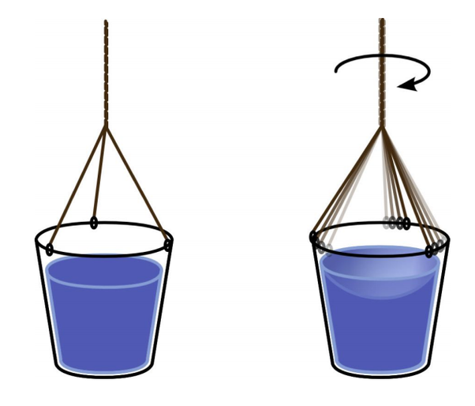

Segundo Isaac Newton, todos os objetos que no mundo se movem, movem-se em relação a um referencial absoluto: O espaço absoluto. Portanto, para ele, todo corpo possuiria uma velocidade relativa a algum objeto qualquer e uma velocidade absoluta, a qual se podería medir com respeito ao espaço absoluto.
O espaço absoluto seria então um ente abstrato, puramente matemático:
"O espaço absoluto, em sua própria natureza, sem relação com qualquer coisa externa, permanece sempre similar e imóvel" — Isaac Newton
Para newton, assim como havia um espaço absoluto, havia também um tempo absoluto:
"O tempo absoluto, verdadeito e matemático, por si mesmo e de sua própria natureza, flui uniformemente sem relação com qualquer coisa externa e é também chamado de duração." — Isaac Newton
|
Segundo a mecânica de Newton, suas leis da dinâmica (em sua forma convencional, sem correções para referenciais não inerciais) serviriam para descrever o movimento de corpos que se moviam com velocidade constante em relação a este espaço e tempo absolutos. O espaço absoluto seria então equivalente a um palco de teatro, mas inacessível à percepção, abstrato, onde os corpos seriam os atores e nele performariam; e todos os atores estaria igualmente sujeitados ao tempo medido por um único e implacável relógio (tempo absoluto). |
➔ O EXPERIMENTO DO BALDE DE NEWTON (que demosntra a necessidade do espaço absoluto)
Newton, para justificar sua teoria, propôs o seguinte experimento: Em posse de um balde parcialmente preenchido com água, induziu, com o auxílio de um barbante previamente torcido, o balde à rotação. O que ele observou foi que, quando em rotação, o perfil da água assumia um caráter côncavo. Este fenomeno se devia ao fato de que quando um corpo encontra-se acelerado, neste caso, referimos-nos a aceleração centrípeta (pois há uma rotação), passa a agir sobre o corpo forças "estranhas", neste caso, a força centrífuga, que arremessa a água radialmente para as extremidades do balde. Newton sabia disto.
|
 |
A pergunta intrigante é: O balde está acelerado em relação a quê?
Segundo Newton, a princípio, existiriam pelo menos três possíveis respostas que poderiam responder corretamente a esta questão: O balde, a terra, os estrelas. Newton argumentará que nenhuma destas alternativas é capaz de explicar o fenômeno. Eis as justificativas:
◦ O porquê não é o balde: Antes de girar o balde, não havia nenhum movimento relativo entre o balde e a água, e, depois de girá-lo, transcorrido um certo tempo, a água girará com a mesma velocidade angular que o balde (devido a força de atrito das paredes do balde sobre a água), e os dois passarão a não ter, novamente, nenhum movimento relativo entre si.
◦ O porquê não é o planeta Terra: Não poderia ser a Terra porque a única interação presente entre a terra e a água é a interação gravitacional, que em nada se deixa influenciar pelo movimento giratório da água.
◦ O porquê não são as estrelas: Por razões análogas às razões de porquê não é a terra.
Através deste raciocínio, Newton concluirá que o balde só pode estar girando com respeito àquilo que ele denominou de espaço absoluto.
Gottfried Leibniz (★ 1646 — 1726 ✝), filósofo e matemático comtemporâneo a Newton, se opôs as ideais de tempo e espaço absolutos propostas por newton:
"O espaço é algo puramente relativo, a ordem das coexistências". — Leibniz
"O tempo é algo puramente relativo, a ordem das sucessões". — Leibniz
Berkeley (★ 1685 — 1753 ✝), filósofo inglês também contemporâneo a Newton disse:
"Só há movimento relativo, para conceber a ideia de movimento é imprescindível ao menos dois corpos". — Berkeley
"Para determinar o movimento seria suficiente introduzir, ao invés do espaço absoluto, o céu das estrelas fixas". — Berkeley
Ernest Mach (★ 1836 — 1916 ✝), cientista e filósofo austríaco, aproximadamente dos séculos após newton, no livro A ciência da mecânica (1883), critíca duramente a teoria de Newton, dizendo que "a hipótese do espaço absoluto é um monstrengo metafísico". Este livro viria a influenciar enormemente o jovem Albert Einstein, que o leu quando tinha 16 anos.
"Os princípios da mecânica podem ser concebidos de tal maneira que mesmo para rotações relativas surgem as forças centrífugas". — Mach
Neste mesmo livro, Mach propõe um experimento que, segundo ele próprio, se realizado, suplantaria a validade das ideias de Newton:
"Tente parar o balde e girar o conjunto das estrelas fixas; e então prove a ausência das forças centrífugas". — Mach
Estes conceitos que foram propostos por Newton, embora sejam inacessíveis para as nossas percepções, podemos dizer que são bastante acessíveis a nossa intuição, sobretudo o conceito de tempo absoluto. Como veremos a partir daqui, toda a relatidade gravita ao redor deste tema. A teoria da relatividade é a construção teórica que contestará a existencia do espaço e tempo absolutos proposta por Newton.